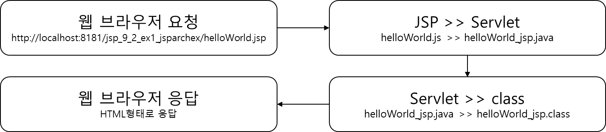
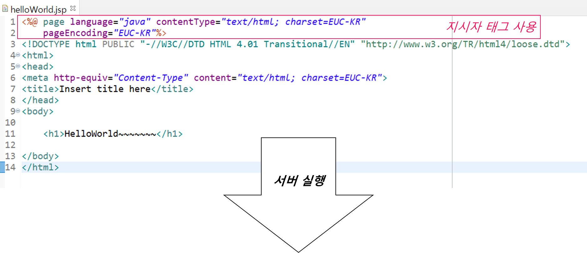
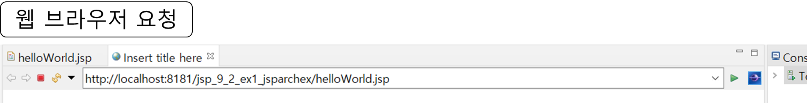
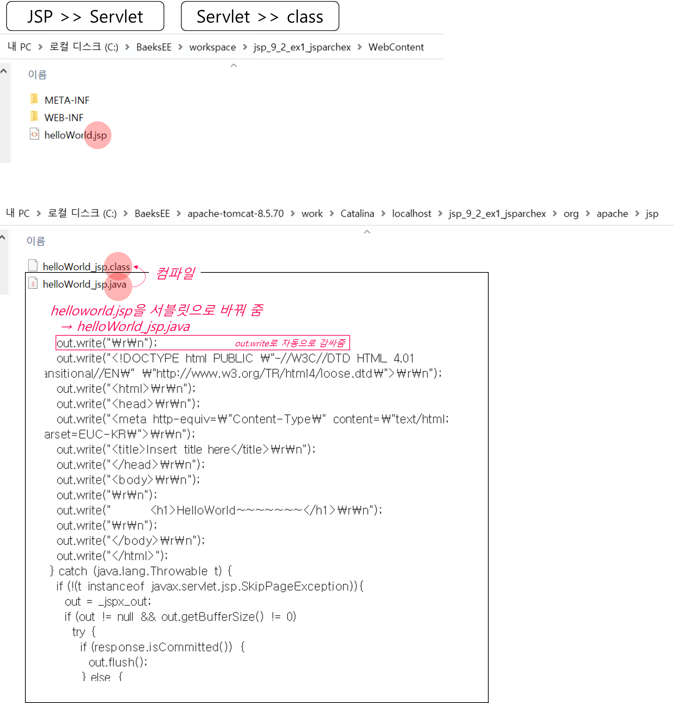
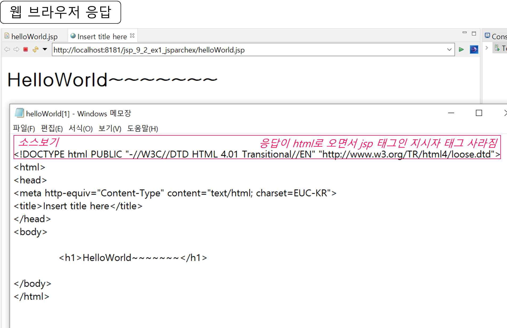
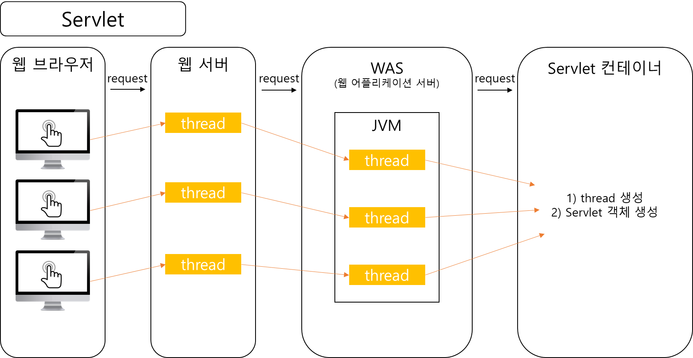

9. jsp 1
0. 목차
Chapter9. JSP 본격적으로 살펴보기-I
Ch9 - 1. JSP 태그의 개념 이해
Ch9 - 2. JSP 동작 원리
Ch9 - 3. JSP 내부 객체
Ch9 - 1. JSP 태그의 개념 이해
▶ HTML : Servlet vs JSP
▷ HTML_Servlet : JAVA 언어, 출력 객체를 이용하여 HTML 코드 삽입
- Servlet은 MVC에서 controller로 많이 이용
▷ HTML_JSP : HTML 코드에 JAVA 언어를 삽입
- jsp는 html 작성 방법이 화면 구성을 하기 쉬움
- html을 만들어 놓고 jsp를 그냥 넣으면 됨
- 그래서 MVC에서 view로 많이 이용 됨
▷ 공통점 : WAS에서 동작

▶ JSP 태그 공부의 필요성
▷ HTML 코드 안에 JAVA 코드를 삽입 시 태그 이용
▷ 따라서 이러한 태그를 공부해야 함
▶ JSP 태그 종류
▷ 지시자 : 페이지 속성
<%@ %>
▷ 주석
<%-- --%>
- html 주석 : 브라우저가 실행 → 브라우저에서 소스 보기를 통해 보기 가능
- jsp 주석 : WAS에서 실행 → 서버에서 실행되서 브라우저에서 보기 불가
▷ 선언 : 변수, 메서드 선언
<%! %>
// 변수 선언
string str = "ABC"; // 어디서나 볼 수 있는 전역의 의미로 사용
// jsp 변수 선언
<%!string str = "ABC";%> // 세미콜론(;)을 붙임
▷ 표현식 : 결과값 출력
<%= %>
- 세미콜론(;) 붙이지 않음
=: 값을 표현<%=str%> // ABC
▷ 스크립 트릿 : JAVA 코드
<% %>
// html
<%
// java 코드 작성
%>
▷ 액션 태그 : JAVA 빈 연결
<jsp:action>, </jsp:action>
Ch9 - 2. JSP 동작 원리
▶ JSP가 요청되어 응답하기까지
▷ 클라이언트가 웹 브라우저로 helloWorld.jsp를 요청하게 되면,
▷ JSP 컨테이너가 JSP 파일을 Servlet 파일(.java)로 변환
▷ 그리고 Servlet 파일(.java)은 컴파일 된 후 클래스 파일(.class)로 변환되고,
▷ 요청한 클라이언트한테 html 파일 형태로 응답





▶ Servlet vs JSP
▷ Servlet
